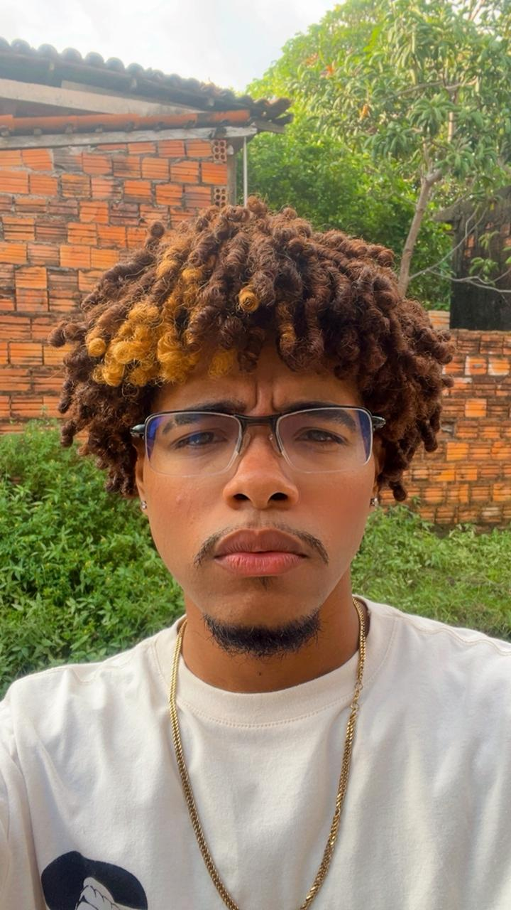

Luis Felipe Reis
Desenvolvedor Front-end
Olá! Me chamo Luis Felipe, tenho 21 anos e sou estudante de Ciência e Tecnologia na UFMA. Tenho muito interesse pela área de front-end, com a qual me identifiquei bastante por envolver duas coisas de que gosto muito: tecnologia e criatividade. Desde mais novo, sempre gostei de mexer com edição de vídeos, imagens e outras coisas relacionadas à parte visual. Gosto de trabalhar com estética, pensar em como as coisas são apresentadas e estar em contato com a tecnologia. Com o tempo, fui percebendo que o desenvolvimento front-end reunia várias dessas coisas que já despertavam meu interesse. Minha jornada na programação começou de uma forma um pouco diferente: pelo celular! Quando entrei na faculdade, ainda não tinha um computador em casa e meu contato com a programação ficava praticamente restrito às aulas. Isso dificultava bastante estudar por conta própria e praticar com mais frequência. Foi aí que conheci o aplicativo Mimo, que me permitiu dar os primeiros passos na programação pelo celular. Mesmo com as limitações, consegui experimentar um pouco desse universo e perceber que era algo que realmente me interessava. Fora da tecnologia, gosto bastante de praticar esportes. Mesmo quando não conheço muito bem uma modalidade, gosto de experimentar, aprender e, principalmente, me divertir durante o processo. Também curto jogar games, que são outra forma de me divertir e passar o tempo. Profissionalmente, quero continuar evoluindo, aprender cada vez mais e ter oportunidades para colocar em prática tanto o que já aprendi quanto aquilo que ainda vou aprender. Quero participar de projetos que façam a diferença, contribuindo positivamente para as empresas, para o mercado e, principalmente, para as pessoas. Sei que ainda tenho muito a aprender, mas estou animado para continuar nessa jornada e descobrir até onde posso chegar!